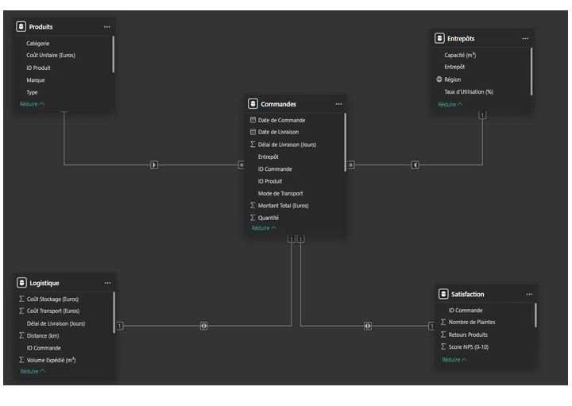
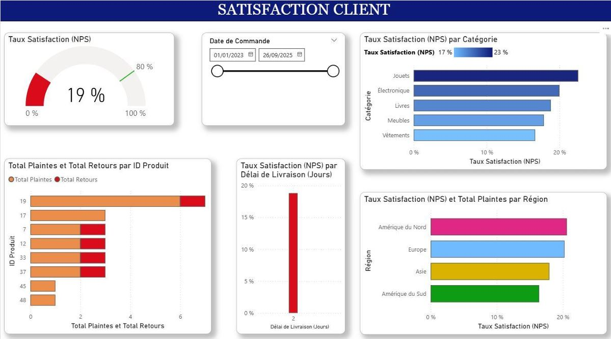

Ingénieur Systèmes d'Information & Ingénierie Financière.
Piloter la performance par la Data et la Stratégie.
À propos de moi
Futur ingénieur diplômé de l'ECAM-EPMI, je suis spécialisé en Management des Systèmes d'Information (MSI) et Ingénierie Financière. Ce double cursus me permet de maîtriser à la fois les enjeux stratégiques de la finance et les leviers technologiques pour les résoudre.
De la modélisation financière (Cash Flows, VAN) à l'architecture Cloud (Azure) en passant par la Business Intelligence (Power BI), j'ai développé une approche "Data-Driven" pour optimiser la prise de décision et sécuriser les processus bancaires et industriels.
Je suis à la recherche d'un stage de fin d'études de 6 mois, avec un démarrage flexible entre Février et Avril 2026. Prêt à m'investir au sein de vos équipes en tant que :
Le Challenge : Optimiser la Supply Chain d'un acteur E-commerce international en centralisant des données hétérogènes (ERP, CSV) pour réduire les coûts et améliorer la satisfaction.
Ma Solution : Conception d'un système décisionnel complet (ETL, Modélisation, Dataviz) sous Power BI.
1. Data Engineering & Modélisation

Architecture (Star Schema) : Conception d'un modèle optimisé reliant une table de faits centrale aux dimensions analytiques (Produits, Entrepôts, Clients).
ETL : Nettoyage des données via Power Query pour assurer la qualité de la donnée.
2. Analyse de la Performance
Logistique : Identification des zones de surcoûts logistiques via une analyse cartographique dynamique.
Optimisation : Mise en évidence d'une surcapacité de stockage ("coût du vide") face à la demande.
3. Satisfaction Client (NPS)

Qualité : Analyse du Net Promoter Score (NPS) révélant un taux critique de 19% malgré des livraisons rapides.
Décision : Réorientation des investissements vers le contrôle qualité plutôt que le transport.
Ma Valeur Ajoutée : Une double compétence rare alliant la rigueur de l'Ingénierie Financière à la puissance des Systèmes d'Information. Je conçois les outils techniques qui permettent de piloter la stratégie financière.
Finance & Business Intelligence
Transformer la donnée brute en levier de performance économique.
Corporate Finance : Modélisation financière complexe (Business Plan, Cash Flows), Analyse de rentabilité (VAN, TRI, Payback) et Structuration de Haut de Bilan (Dette/Equity).
Finance de Marché : Gestion d'actifs (Asset Management), Optimisation de portefeuille (Markowitz/CAPM), Stratégies de couverture (Hedging) et Analyse de risques.
Data Intelligence : Maîtrise complète de la chaîne de valeur Data : Extraction (ETL), Modélisation (Star Schema) et Visualisation avancée (Power BI/DAX).
Cloud & Ingénierie IT
Déployer des infrastructures résilientes, sécurisées et optimisées.
Cloud Computing (Azure) : Architecture IaaS/PaaS, Gestion des réseaux virtuels (VNet, Peering), Sécurité (NSG, IAM) et Haute Disponibilité.
FinOps & Cloud Cost Mgmt : Pilotage et optimisation des coûts Cloud (OPEX), dimensionnement des ressources (Rightsizing) et gouvernance budgétaire.
Développement Fullstack : Conception d'applications Web modernes (React.js, Node.js), Design d'API REST et gestion de bases de données relationnelles (MySQL).
Ma "Tech Stack"
Excel Power BI (DAX)Power Query (ETL)Python (Pandas)SQL / MySQL Microsoft AzureFinOpsReact.jsNode.jsGit / GitHub Jira (Agile)Gantt ProjectGMAO (Coswin)AutoCAD
Soft Skills & Méthodologie
Gestion de Projet & Méthodes : Pilotage hybride adapté au contexte : Agile / Scrum pour les projets IT (Itérations rapides) et Cycle en V pour les projets industriels/financiers (Jalons stricts).
Savoir-Être (Soft Skills) : • Rigueur Analytique : Fiabilité absolue dans le traitement des chiffres et des modèles.
• Pédagogie ("Bridge") : Capacité à traduire les enjeux techniques aux métiers (DAF) et inversement.
• Adaptabilité : Curiosité technique et apprentissage continu (Veille Techno/Finance).
Langues : Anglais (Pratique Professionnelle : Lecture/Rédaction), Français (Langue maternelle).